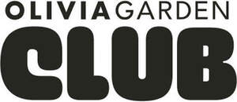

Trade Mark Journal No.2025/030 25 July 2025
UK00004224663 25 June 2025 (8,21,25,35,41)

International priority date claimed: 24 June 2025
(European Union Intellectual Property Office (EUIPO))
(019207245)
- Class 8
- Electric straighteners for curling and styling the hair; Electric styling devices, hair straighteners and styling irons, heated products with interchangeable accessories for hair care, being electric hair straighteners and curlers; Electric nasal hair trimmers; Manicure and pedicure kits, nail care kits; razors and scissors for professional hairdressers and barbers; Beard clippers; electric manicure sets; depilation appliances (electric and non-electric); files (tools); fingernail polishers (electric or non-electric); hair styling appliances (hand-operated, non-electric); Electric hair straightening Irons; curling tongs; hair-removing appliances (electric and non-electric); hair clippers (electric and non-electric); manicure sets; nail files; nail files (electric); cuticle nippers; nail clippers (electric or non-electric); pedicure sets; tweezers; hair-removing tweezers; razors, electric or non-electric; shavers; razor strops; shaving sets; eyelash curlers; Hand tools and implements, hand-operated; razors; Razor blades; Razor knives; Cases (Razor -); Razor cases; Disposable razors; Safety razors; Straight razors; Electric razors; Japanese razors; Razor blade dispensers; Safety razor blades; Non-electric razors; Vibrating blade razors; Cases for razors; Dispensers for razor blades; Razor strops [leather strops]; Cartridges for razor blades; Cartridges containing razor blades; Cassettes for razor blades; Cases adapted for razors; Blades for electric razors; Containers adapted for razor blades; Safety razor blades (Dispensers for -); Beard trimmers; Electric beard trimmers; Nasal hair trimmers; Wick trimmers [scissors]; Electric hair trimmers; Non-electric eyebrow trimmers; Trimmers [hand operated tools]; Nail skin treatment trimmers; Mustache and beard trimmers; Electric ear hair trimmers; Non-electric beard trimmers; Wick trimmers being scissors; Hedge trimmers [hand-operated tools]; Candle wick trimmers being scissors; Beard Shaping Tool; Tool aprons; Shaving cases; Shaving blades.
- Class 21
- Household or kitchen utensils and containers; combs and sponges; brushes; coloration brushes; electric Hair brushes, electric brushes for removing the hair; Electric brushes for cleaning the body, face; Make-up brushes; electric brushes for nail care; material for brush-making; articles for cleaning purposes; hair combs and brushes; cosmetic brushes; applicators and sponges; toothbrushes; perfume atomizers and bottles; containers for burning and diffusing incense, perfume and oils; candle holders and candlesticks of non-precious metal; tissue holders and dispensers; toilet paper holders and dispensers; Combs; Shaving brush stands; Toilet brushes; Shampoo brushes; Eyebrow brushes; Exfoliating brushes; Shaving stands; Shaving brushes; Stands for shaving brushes; Shaving brush holders; Stands for shaving utensils; Holders for shaving brushes; Shaving brushes of badger hair; Shaving dishes; Shaving bowls; Shaving pots; Hairbrushes; Hair combs; Hair brushes; Hair tinting brushes; Hair tinting bowls; Electric hair combs; Hair color application bottles; Hair color application brushes; Caddies for holding hair accessories for household and domestic use; Large-toothed combs for the hair; Combs for the hair (Large-toothed -); Electric hair brushes.
- Class 25
- Aprons for professional hairdressers and barbers; Headgear; Clothing; articles of clothing, in particular jumpers, shirts, blouses, skirts, coats, trousers, pullovers, dresses, jackets, shawls, scarves, ties, belts, socks, and bathrobes; Shoes and slippers; Waist belts; Barber smocks; Vests for use in barber shops and salons; Aprons [clothing]; Disposable aprons; Plastic aprons; Paper aprons; Hairdressing capes; shoes.
- Class 35
- Advertising; Business management and organization consultancy; Business management consulting; Business administration; Business organization consulting; Publication of publicity texts; Sample distribution; Demonstration of goods; Sales promotion; Updating of advertising material; Office functions; Advertising services; Distribution of prospectuses, samples and advertising articles; Organization of shows or events for commercial or advertising purposes; Retail, wholesale, semi-wholesale and e-commerce services connected with the sale of, professional equipment and accessories for hairdressers, barbers and hairdressing and barbers salons, in particular hairdryers, electric straighteners for curling and styling the hair, Electric styling devices, hair straighteners and styling irons, heated products with interchangeable accessories for hair care, including electric hair straighteners, Hair clippers and epilators for the body, razors, scissors; Retail, wholesale, semi-wholesale and e-commerce services connected with the sale of, professional equipment and accessories for hairdressers, barbers and hairdressing and barber salons, in particular razors, beard clippers, electric hair clippers, Manicure and pedicure kits, nail care kits, Hand-operated hand tools and implements, razors, scissors for professional hairdressers and barbers; Retail, wholesale, semi-wholesale and e-commerce services connected with the sale of, professional equipment and accessories for hairdressers and hairdressing salons, in particular paper, cardboard and goods made from these materials, printed matter, such as books, advertising leaflets, catalogues, magazines, descriptions, instructions, information leaflets, teaching materials, photographs, stationery, office requisites, plastic materials for packaging, covers, bags, plastic films; Retail, wholesale, semi-wholesale and e-commerce services connected with the sale of, professional equipment and accessories for hairdressers, barbers and hairdressing and barber salons, in particular combs and sponges, brushes, except paint brushes, large-toothed hair combs, material for brush-making, articles for cleaning purposes; Retail, wholesale, semi-wholesale and e-commerce services connected with the sale of, professional equipment and accessories for hairdressers and barbers and hairdressing and barber salons, in particular brushes, hairbrushes, material for brush-making, Brushes for shaping the hair, electric brushes for removing hair, Electric brushes for cleaning the body, face, Make-up brushes, electric brushes for nail care, Shaving brushes; Retail, wholesale, semi-wholesale and e-commerce services connected with the sale of, professional equipment and accessories for hairdressers and barbers and hairdressing and barber salons, in particular clothing, headgear, Head coverings and aprons for professional hairdressers and barbers, Lace and embroidery; Retail, wholesale, semi-wholesale and e-commerce services connected with the sale of, professional equipment and accessories for hairdressers and barbers and hairdressing and barber salons, ribbons, braid, buttons, hooks and eyes, pins and needles, artificial flowers, hair curlers, hair bands, hair grips, hair pins, plaited hair, hair tresses, hair pieces and wigs; Retail, wholesale, semi-wholesale and e-commerce services connected with the sale of professional equipment and accessories for hairdressers and barbers and hairdressing and barber salons, in particular hairstylers for hairdressing, products made by hand of hair for hairdressing purposes, Pins, Needles, Bobby pins, Barrettes, Hair pins, Toupees; Retail, wholesale, semi-wholesale and e-commerce services connected with the sale of razors and scissors for professional hairdressers and barbers, Beard clippers, electric manicure sets, depilation appliances (electric and non-electric), razor cases, files (tools), fingernail polishers (electric or non-electric), hair styling appliances (hand-operated, non-electric); Retail, wholesale, semi-wholesale and e-commerce services connected with the sale of straightening irons, curling tongs, hair-removing appliances (electric and non-electric), hair clippers (electric and non-electric), manicure sets, nail files, nail files (electric), cuticle nippers, nail clippers (electric or non-electric), pedicure sets, tweezers, hair-removing tweezers, razors, electric or non-electric, razor blades, shavers, razor strops, shaving sets, eyelash curlers; Retail, wholesale, semi-wholesale and e-commerce services connected with the sale of aprons for professional hairdressers and barbers, Headgear, Clothing; Retail, wholesale, semi-wholesale and e-commerce services connected with the sale of electric Hair brushes, electric brushes for removing the hair, Electric brushes for cleaning the body and face, Make-up brushes, electric brushes for nail care, Shaving brushes, material for brush-making, articles for cleaning purposes, shaving pots, shaving brushes, shaving brush stands, hair combs and brushes, cosmetic brushes; Retail, wholesale, semi-wholesale and e-commerce services connected with the sale of applicators and sponges, toothbrushes, perfume atomizers and bottles, containers for burning and diffusing incense, perfume and oils, tissue holders and dispensers, toilet paper holders and dispensers, Make-up brushes, Combs, Hair combs, Shaving brush stands, Shaving brushes, Toilet brushes, Shampoo brushes, Brushes; Marketing services; Organization of exhibitions and events for commercial or advertising purposes; Organization of trade fairs for commercial or advertising purposes; Market research and marketing studies; Management of import-export agencies; Business management of flagship stores; Trade promotional services; Product presentation in communication media for retail purposes; Presentation of goods on all means of communication for retail; Wholesale and retail services connected with the sale of preparations and products for care of the skin, hair and body, and hygiene preparations and products; Consumers (Commercial information and advice for -) [consumer advice shop]; Commercial information services, via the internet; Providing an on-line commercial information directory on the internet; Compilation of directories for publication on the internet; Business administration services for processing sales made on the internet; Marketing and promotional services, Including public relations, product demonstrations and product display services, Exhibition and trade fair services; Organisation of exhibitions and events for commercial or advertising purposes; Promotion and publicity; Dissemination of advertising matter; Dissemination of information or messages for advertising purposes by telephone, computer terminals or the press; Rental of advertising space; Shop window dressing; Demonstration of goods for commercial purposes; Market research; Publicity columns preparation; Sales promotion for others; Organisation of exhibitions, trade fairs or events for commercial or advertising purposes; Retail, wholesale, semi-wholesale and mail-order, in the context of electronic commerce, connected with the sale of cosmetics, perfumery, essential oils, Organisation of events for advertising or commercial purposes; Import and export agency services; Advertising, advertising promotion and administration relating to customer loyalty schemes, including via customer clubs; Organisation of trade fairs for promotional purposes; All the aforesaid services also being provided via telecommunications channels, in particular via the internet; Information, advice and consultancy relating to the aforesaid services, in particular via global computer networks; Information , advice and consultancy relating to the aforesaid services; all the aforementioned services also via an online computer network or Internet.
- Class 41
- Education, training; entertainment, organization and implementation of cultural and/or sporting events in the fields of hairdressing, shaving, barbering and cosmetics, motion picture rental and transparent slide rental, publication and issuing of books and magazines; Organization of international hairdressing, shaving and/or barbering awards; organization of hairdressing shows and catwalks; organization of seminars and special conferences, planning, development and operation of events in the hairdressers, shaving, barbering and cosmetic domain; Providing of training and continuing education for hairdressers and barbers; Arranging and conducting of conferences, events, colloquiums, workshops, congresses, seminars, conferences, meetings (training), courses, symposiums, exhibitions for cultural and educational purposes; Organization of lotteries and contests (education or entertainment); Production of films and films on video tapes, radio programs, radio and television entertainment; Editing of video tapes, radio and television programs; Organization of exhibitions for cultural or educational purposes; Organization of entertainment; Providing education and training; providing hairdresser training; providing training for barber skills; provision of training courses; provision of hairdressing training courses; provision of training courses for barbers; educational seminars relating to hairdressing techniques; consultancy in relation to the aforesaid services; production of TV shows; production, presentation and rental of television and radio programmes and of films and sound and video recordings; production of audio-visual recordings; provision of non-downloadable videos; video production services; production of training videos; publication, production and rental of educational and instructional materials; entertainment, education and instruction by or relating to television and radio programmes, and of films and sound and video recordings; entertainment, education and instruction services; Organising community cultural events; Arranging of cultural events; Organisation of cultural events; Organising of recreational events; Conducting of educational events; Entertainment services in the nature of organizing social entertainment events; Arranging and conducting of educational events for charitable purpose; entertainment, education and instruction relating to barber services; Presentation of live show performances; hairdressing and barber exhibitions; Manicure training; Barber instruction; Educational seminars relating to hairdressing and barber techniques; Demonstration of hairdressing and barber products for training purposes; Demonstration of hairdressing products for training purposes; Information, advice and consultancy relating to the aforesaid services; all the aforementioned services also via an online computer network or Internet.
OLIVIA GARDEN SA
Representative: BOC TRADE MARKS LIMITED